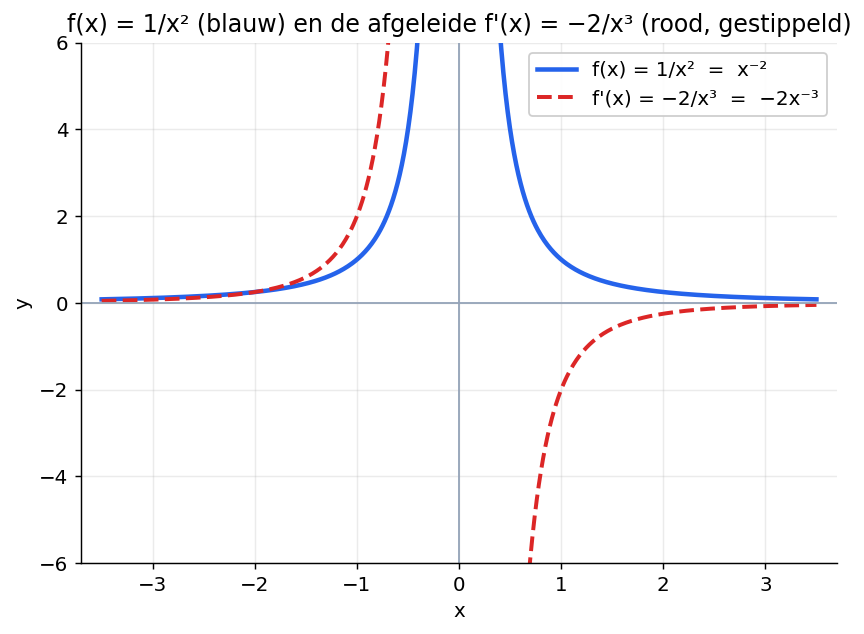
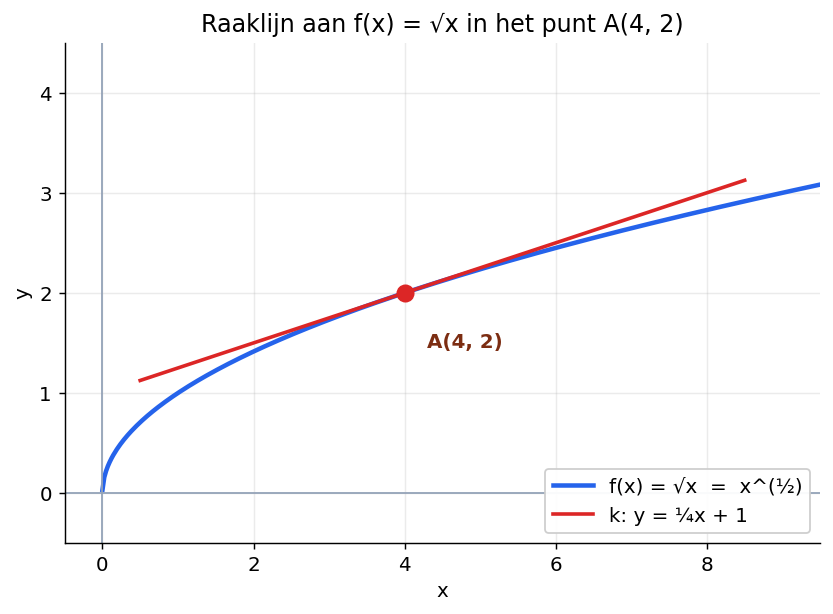
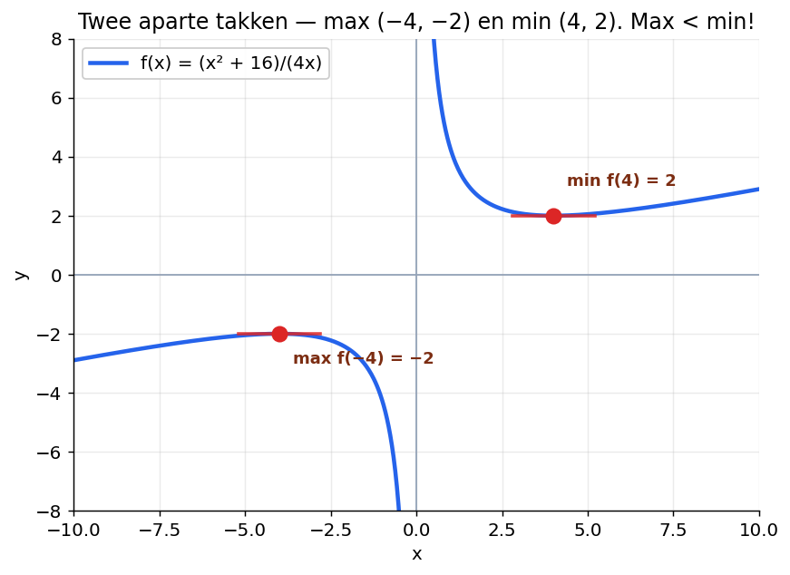
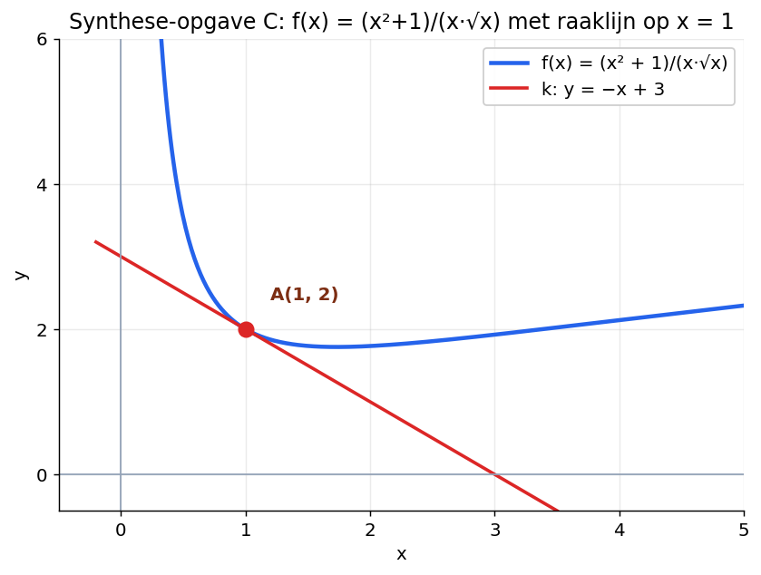

Negatieve exponenten, wortels en herleiden
Korte video's per theorie-blok.
Klik op de knop hieronder en je tutor begeleidt je stap voor stap door deze paragraaf. Werk in je eigen tempo. Een fout antwoord is geen probleem — daar leer je juist van.
In §6.1 heb je geleerd hoe je f'(x) berekent voor functies als x², x³ en sommen daarvan.
De regel was:
Maar wat doe je bij 1/x²? Of bij √x?
Het mooie: de regel werkt nog steeds. Je moet alleen eerst de functie herschrijven in de vorm xn.
Daarvoor heb je iets nodig wat je in H5 bij exponenten hebt gezien. Een korte opfris:
Een negatieve exponent betekent een breuk:
Een gebroken exponent betekent een wortel:
Speciaal geval: x1/2 = √x.
Vul dit eerst zelf even in. Geen rekenmachine — denk terug aan H5.
De machtsregel uit §6.1 werkt ook als n een negatief geheel getal is. Dus voor n = −1, −2, −3, …

Differentieer g(x) = 1/x².
Stap 1. Schrijf in de vorm xn:
Stap 2. Pas de regel toe — exponent voor de x, en doe er 1 af:
Stap 3. De functie zelf was met een breuk gegeven (1/x²), dus schrijf het antwoord ook met een breuk terug:
Differentieer f(x) = 6/x³.
Stap 1. Herschrijf:
Stap 2. Pas de regel toe (constante blijft staan):
Stap 3. Terug naar breuk:
De regel werkt ook als n een gebroken getal is, zoals ½, ⅓, 3/2.

Differentieer f(x) = √x.
Stap 1. Schrijf de wortel als exponent:
Stap 2. Pas de regel toe — exponent voor de x, en doe er 1 af:
Stap 3. De functie was met een wortel gegeven, dus schrijf het antwoord ook met een wortel terug:
Controle op figuur 2: in x = 4 is f'(4) = 1/(2·2) = ¼. De raaklijn heeft helling ¼ — klopt met de figuur.
Differentieer g(x) = x · √x.
Stap 1. Combineer tot één macht van x:
(Onthoud uit H5: bij vermenigvuldigen van zelfde grondtal tel je de exponenten op. 1 + ½ = 3/2.)
Stap 2. Pas de regel toe:
Stap 3. Terug naar wortelvorm:
Vul alle drie de antwoorden in als wortel of breuk (geen exponent), want de functies zijn met wortels gegeven.
Heel vaak krijg je een functie die er nog niet uitziet als xn. Bijvoorbeeld een breuk met meerdere termen in de teller, of een breuk met een wortel onderin.
Dan moet je eerst herleiden vóór je differentieert.
Differentieer f(x) = (4x + 1)/√x.
Stap 1. Splits de breuk:
Stap 2. Schrijf elke term met een exponent. Gebruik x/√x = x1/x1/2 = x1/2:
Stap 3. Differentieer term voor term:
Stap 4. Schrijf terug met wortels (functie was met wortel gegeven):

Bereken exact de extreme waarden van f(x) = (x²+16)/(4x).
Stap 1. Herleid:
Stap 2. Differentieer:
Stap 3. Los op f'(x) = 0:
Stap 4. Bereken de y-waarden:
Antwoord: max f(−4) = −2 en min f(4) = 2.
(Maximum is hier kleiner dan minimum omdat de grafiek uit twee losse takken bestaat — zie figuur 3.)
1. Differentieer f(x) = (2x² − 3)/x². Tip: splits de breuk.
2. Differentieer g(x) = √x / x². Tip: schrijf eerst alles als één macht van x.
Op de toets krijg je opgaven met meerdere deelvragen die op elkaar bouwen. Een opgave is pas af als alle deelvragen kloppen.
Gegeven is de functie f(x) = 2/x⁴.
Gegeven is de functie f(x) = (3x + 3)/x. Het punt A is het snijpunt van de grafiek van f met de x-as. De raaklijn k aan de grafiek van f in punt A snijdt de y-as in punt B.
Gegeven is de functie f(x) = (x² + 1)/(x · √x).

Klik op de tutor-knop rechtsonder. Vertel welke opgave en deelvraag, en bij welke stap je vastloopt.